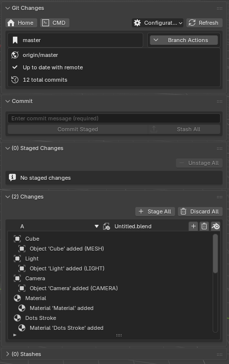
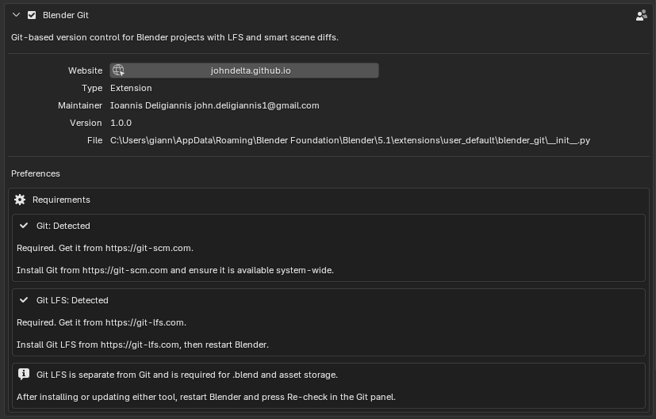
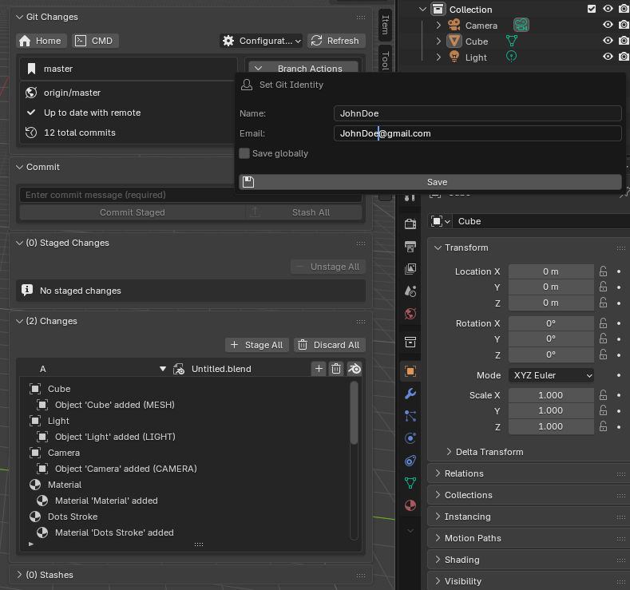
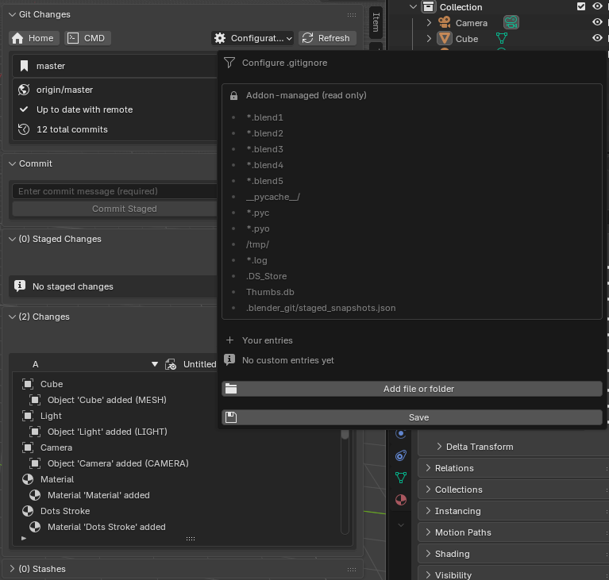
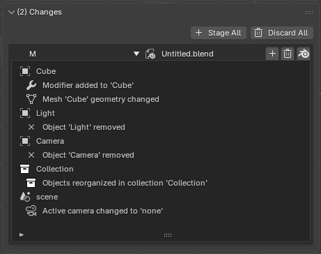

Git-based version control directly inside Blender. Commit, branch, merge.
Blender Git brings Git-based version control directly inside Blender, with no terminal required for everyday tasks. It gives you a dedicated Git tab in the 3D Viewport sidebar, where you can commit your work, manage branches, view history, resolve merge conflicts, and connect to remote repositories. All without leaving Blender.
Because .blend files are binary, standard Git cannot tell you what changed inside them. Blender Git partially solves this by capturing a snapshot of your scene each time you stage a .blend file. When you look at a change in the panel, you see a plain-English list like "Object 'Cube' moved", "Material 'Base' shader nodes changed", "Render resolution changed" , rather than an unreadable binary diff.

The Git panel inside Blender's 3D Viewport sidebar
.blend detail. Staging, unstaging, and discarding work at the file level. You cannot operate on individual scene changes inside a .blend. Conflict resolution also works at the file level: choose one complete version per file.
A save-point system with meaningful descriptions. Roll back to any earlier state of your project anytime.
Collaborate on a shared project via GitHub, GitLab, or any Git host without leaving Blender.
Ever wished you could roll back a Blender project to an earlier state? Now you can.
Before installing the addon, make sure the following tools are in place:
| Requirement | Where to get it | Notes |
|---|---|---|
| Blender 5.x or later | blender.org | Earlier versions are not tested |
| Git | git-scm.com | Must be installed and available system-wide |
| Git LFS | git-lfs.com | Required. Handles large .blend files efficiently |
.blend with 50 commits would bloat the repository to gigabytes. Git LFS stores the actual binary files in a separate object store and keeps only small pointer files in the Git history , keeping the repository lean and fast. Git LFS is a separate install from Git itself. After installing, it registers globally and works transparently.
.zip file..zip.The addon adds a Git tab to the 3D Viewport's N-panel. Press N to open the sidebar if it is not visible.
Open the addon preferences to review the Requirements section. It shows whether Blender can find Git and Git LFS, plus the official install locations if either is missing. Install them separately, then restart Blender.

Addon preferences showing Git and Git LFS detection status
Before committing, set your Git author identity from Configuration > Set Identity. Enter your name and email, then save them for the current repository. Enable Save globally only if you want the same identity to become your user-wide Git default.

Configuration → Set Identity dialog
.blend file.
.blend file to the folder where you want the project to live.The addon creates a Git repository in the same folder as your .blend file, configures Git LFS, prepares .gitignore and .gitattributes, and makes the first commit. You are ready to work.
Initializing a new repository

The Git panel after a successful repository initialization
If someone has already set up a project on a remote (GitHub, GitLab, etc.):
.blend file..blend file from that folder via File > Open.If you already have a local clone, simply open a .blend file from inside that folder and the panel will detect the existing repository automatically.
Cloning an existing project
When you initialize a repository, Git watches every file in that folder and its subfolders, including .blend files, textures, references, and any other assets. You decide which changes to record and when.
.blend files are binary. Git LFS stores them in a dedicated object store and places a small text pointer in the Git history. From your perspective it is invisible. Just stage, commit, and switch branches as usual.
Each time you stage a .blend, the addon captures a snapshot of the current scene state and stages it alongside the file as a small JSON stored under .blender_git/snapshots/.
Snapshots are how Blender Git generates human-readable change descriptions for binary .blend files. Every snapshot captures the state of the open file at the moment of staging.

Readable scene diff generated from snapshots in the Changes panel
.blend file, its snapshot is captured and staged alongside it..blend, Blender Git shows it as an orphan row. Stage or discard it from the panel..blender_git/ to .gitignore. Everything in it (especially snapshots/) must be tracked and committed..blend file gets its own snapshot in a mirrored subfolder structure.The Git panel lives in the 3D Viewport's N-panel. Press N to toggle the sidebar. The panel is divided into several sections:
.gitignore editor, .gitattributes editor, and credentials info.Below the toolbar, a box shows the current branch name, the remote name and URL (if configured), and whether you are ahead, behind, or up to date with the remote.
.blend file has unsaved edits, Blender Git pauses the normal workflow until you save. The panel shows a warning with a Save File button. Git actions use the on-disk version of the file . Saving first keeps the change list, snapshot, and commit content aligned.
.blend files with a snapshot, a chevron button expands a scrollable list of changes in plain English..blend files)..blend row opens that file in a new Blender window.Collapsed by default. Click the header to expand. Lists all saved stashes with their label and index.
.blend file. Only available when the working tree is clean.Using the Stashes panel
Access branch actions via the Branch Actions button next to the current branch name.
main, master, develop, dev) cannot be deleted.Creating a new branch and committing work
Accessed via Branch Actions > History. The history panel lists commits in reverse chronological order, showing the short hash, message, author, and date.
Commit details use the same snapshot language as the Changes panels. Snapshot-only entries are visible, and orphan snapshots are labelled with (orphan).
From any commit entry, click Checkout to New Branch to prompt for a branch name, then create a branch starting at that commit and switch to it. Requires a clean working tree.
Browsing commit history
When a merge produces a conflict, the normal Changes and Commit panels are replaced by a conflict banner showing which branches are involved and how many files need resolution.
.blend file is unresolved, opening it normally can disturb the binary conflict state. Use the conflict dialog's inspection buttons. Reopen the conflicted file normally only after the conflict has been resolved.
.blend file, use Open Ours in Blender and Open Theirs in Blender to inspect both versions.(orphan).To abandon the merge entirely, click Restore to Latest Commit (Abort Merge) from the conflict banner. The repository returns to the state before the merge.
.blend files are binary, conflicts are resolved per file. You choose one complete version of each conflicted file. There is no partial merge.
Resolving a merge conflict
Open Configuration > Set Identity to set the author name and email used for commits. By default, values are saved only to the current repository. Turn on Save globally to write them to your user-wide Git config.
Open Configuration > Configure Remote to:
After adding a remote, use Fetch to retrieve its branches, Pull to bring in the latest commits, and Push to upload your commits.
Configuring a remote repository
Lists the current .gitignore entries. Add patterns for files or folders you do not want Git to track (e.g. temporary render output, cache folders). The addon pre-populates sensible defaults for Blender projects on initialization.
Controls how Git treats specific file types, including which formats are stored via Git LFS. The defaults cover .blend and common image and video formats. Edit only if you need to add custom file types.
.blend file (Ctrl+S)..blend to stage it (snapshot captured automatically).experiment-retopo.Team collaboration and merging via GitHub
This example follows two users working on the same Blender project through GitHub. Both have Git, Git LFS, Blender Git installed, and access to the same GitHub repository.
.blend file inside a clean project folder..gitignore and .gitattributes, and creates the first commit.Initializing the repository
Adding a remote and pushing
.blend file..blend from that folder.Cloning the project
.blend in the Changes panel.Creating a branch, committing, and pushing
Stashing and restoring work
Viewing commit history
Merging changes via pull request
If both users changed the same .blend file on different branches:
Resolving a merge conflict
.blend files are binary, you cannot combine parts of two versions. You choose one complete version of each conflicted file.
.blend file is unresolved, opening it normally can disturb the binary conflict state. Use the conflict dialog's inspection buttons, resolve the conflict, then open the result normally.
.blend files are binary, there is no way to include or exclude individual changes within a file. Every staging, unstaging, or discard operation affects the whole file at once.
.blend and textures in a separate system so your repository history stays small and fast. Without it, every commit that touches a large .blend would duplicate its full size in history. Git LFS is required by this addon . Install it from git-lfs.com. It is a free, one-time install..blend file. If no .blend is open, or if the .blend is not inside the repository folder, the panel cannot find it. Open a .blend from within the repository and the panel will connect automatically..blend may show no snapshot until a new staged commit re-establishes the baseline. If a snapshot exists without its .blend, Blender Git shows it as an orphan snapshot row so you can stage or discard it instead of being left with a hidden dirty file..blend files or branches, and merge at natural milestones..blend has unsaved edits, Blender Git disables branch switching and shows a Save File button first. After saving, switching branches reopens the .blend from the selected branch. If it does not exist on the target branch, Blender opens a new unsaved General file..blend file gets its own snapshot in a mirrored subfolder structure under .blender_git/snapshots/. The change view works for all of them.Questions or issues? Reach out through: